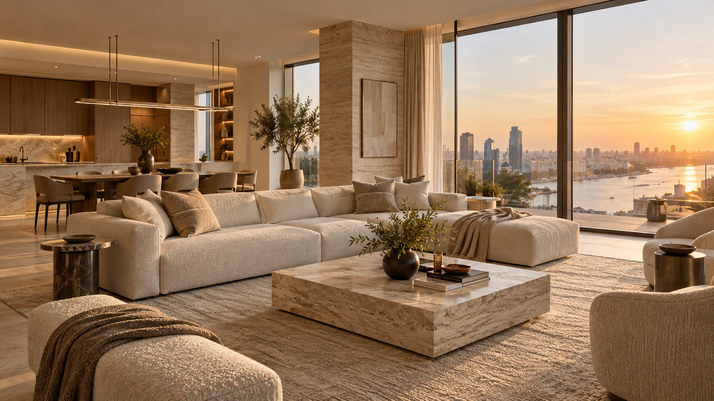
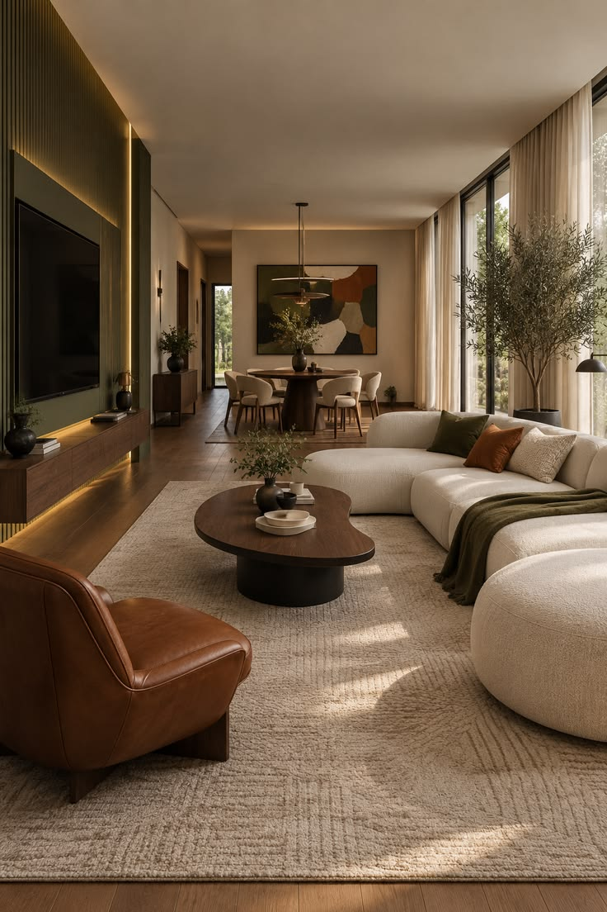
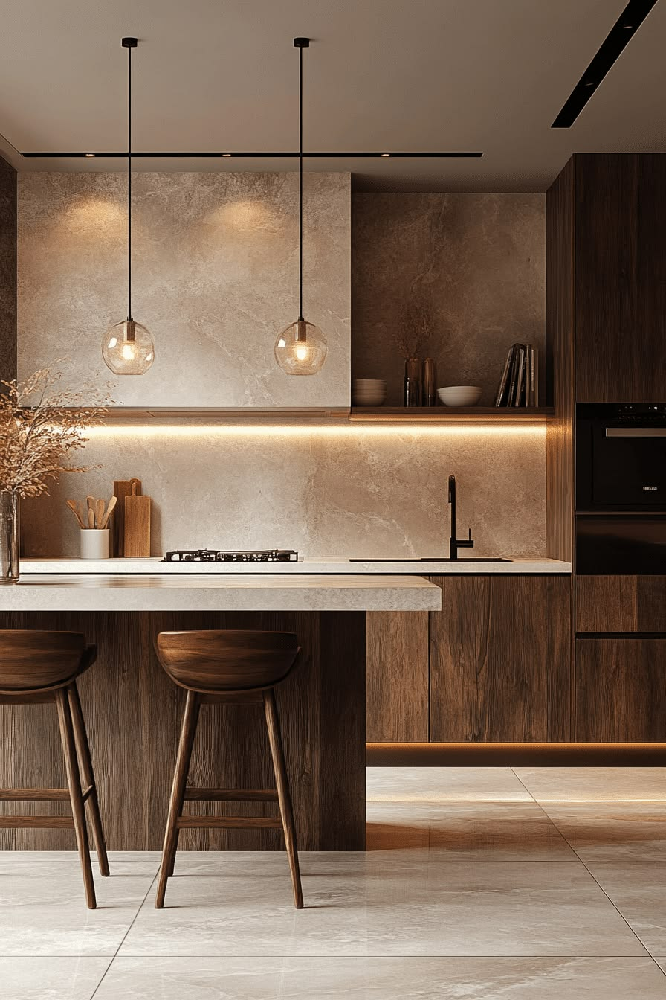
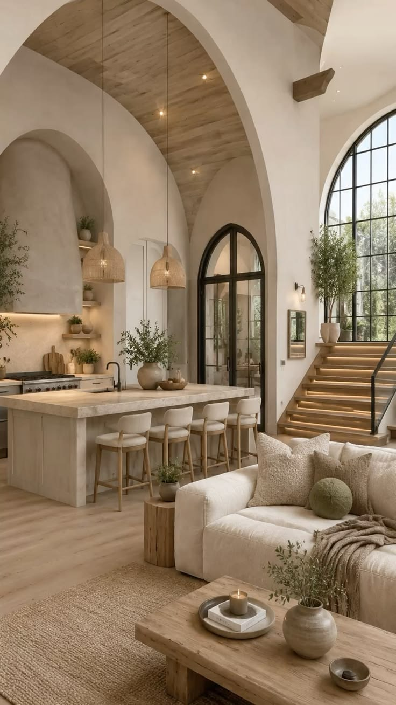
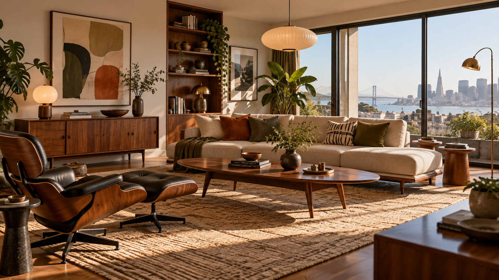
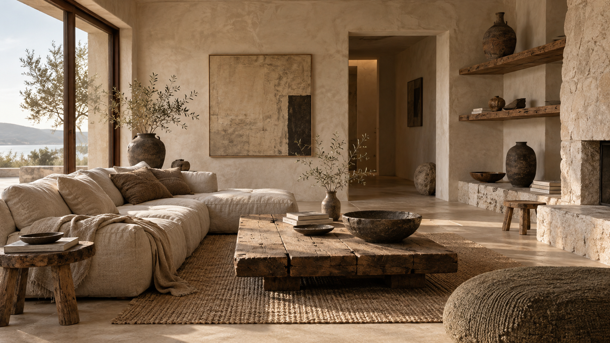
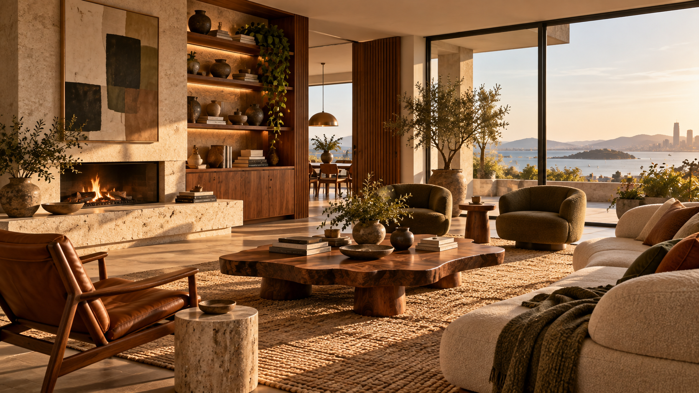

Дизайн квартир · 01—03
Дом, в которомхочется быть.
Создаём индивидуальные интерьеры для реальной жизни — спокойные, цельные, ваши.
Обсудить проектКаждый интерьер начинается
с внимательного разговора.
[ 01 ] О студии
Интерьер не должен объяснять, кто вы. Он должен помогать вам жить в своём ритме.
Тихий контур — студия индивидуального дизайна квартир. Мы соединяем привычки, архитектуру пространства и тактильность материалов в интерьер, который остаётся актуальным годами.
Как мы работаем[ 02 ] Направления
Разные характеры.
Один подход.
Это не готовые шаблоны, а отправные точки для диалога о вашем будущем пространстве.

01Тёплая
↗
Тёплая
современность
↗
02Точная
↗
Точная
выразительность
↗
03Тишина
↗
Тишина
и воздух
↗[ 03 ] Полный дизайн-проект
От первого
ощущения —
до деталей.
- 01
Знакомство
Разбираемся, как вы живёте сейчас и каким хотите видеть свой дом.
- 02
Планировка
Находим логику пространства, в которой удобно именно вам.
- 03
Концепция
Собираем материалы, свет, мебель и настроение в единый образ.
- 04
Документация
Переводим идею в точные решения, понятные для реализации.
[ 04 ] Вдохновение
Пространства
с настроением.
Подборка образов, из которых рождается характер будущего интерьера.



[ 05 ] Начнём разговор
Расскажите
о своём
пространстве.
Оставьте контакты и пару слов о квартире. Мы покажем, как может начаться ваш проект.